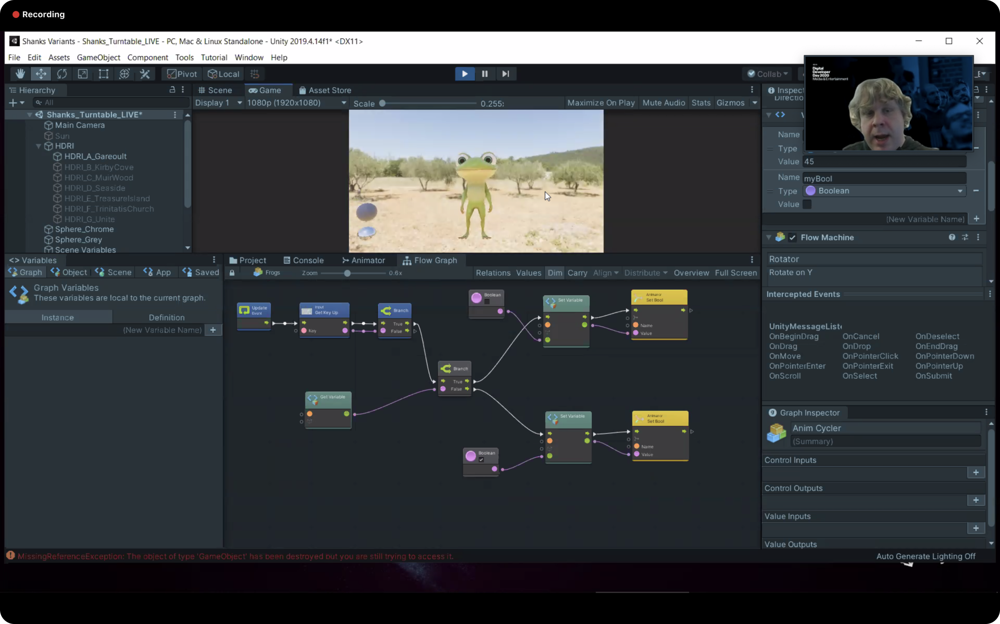
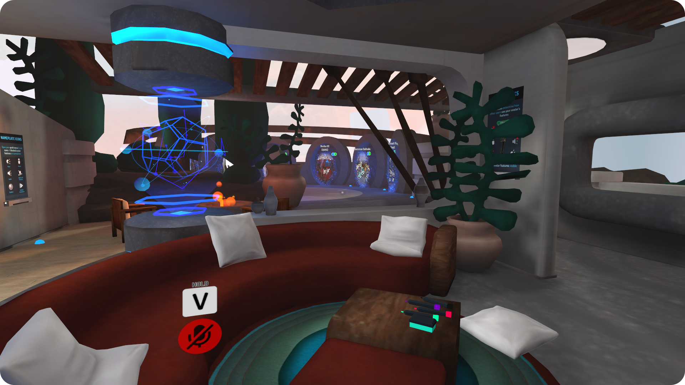
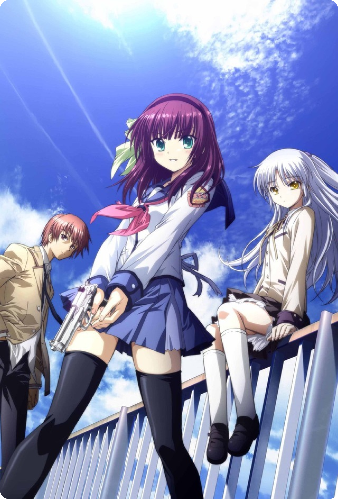
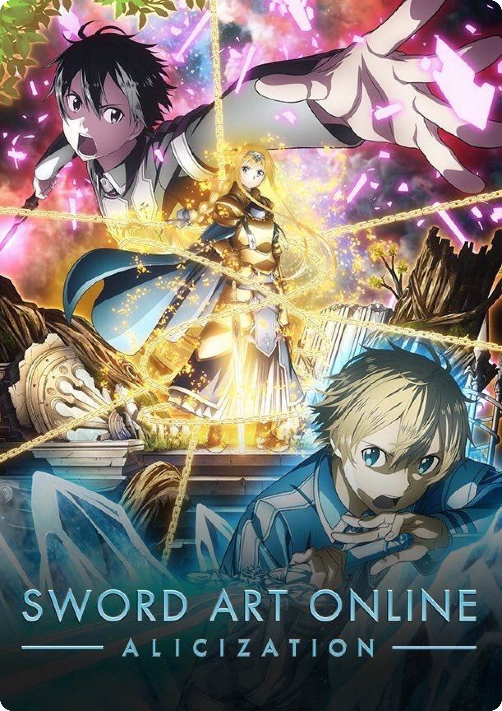
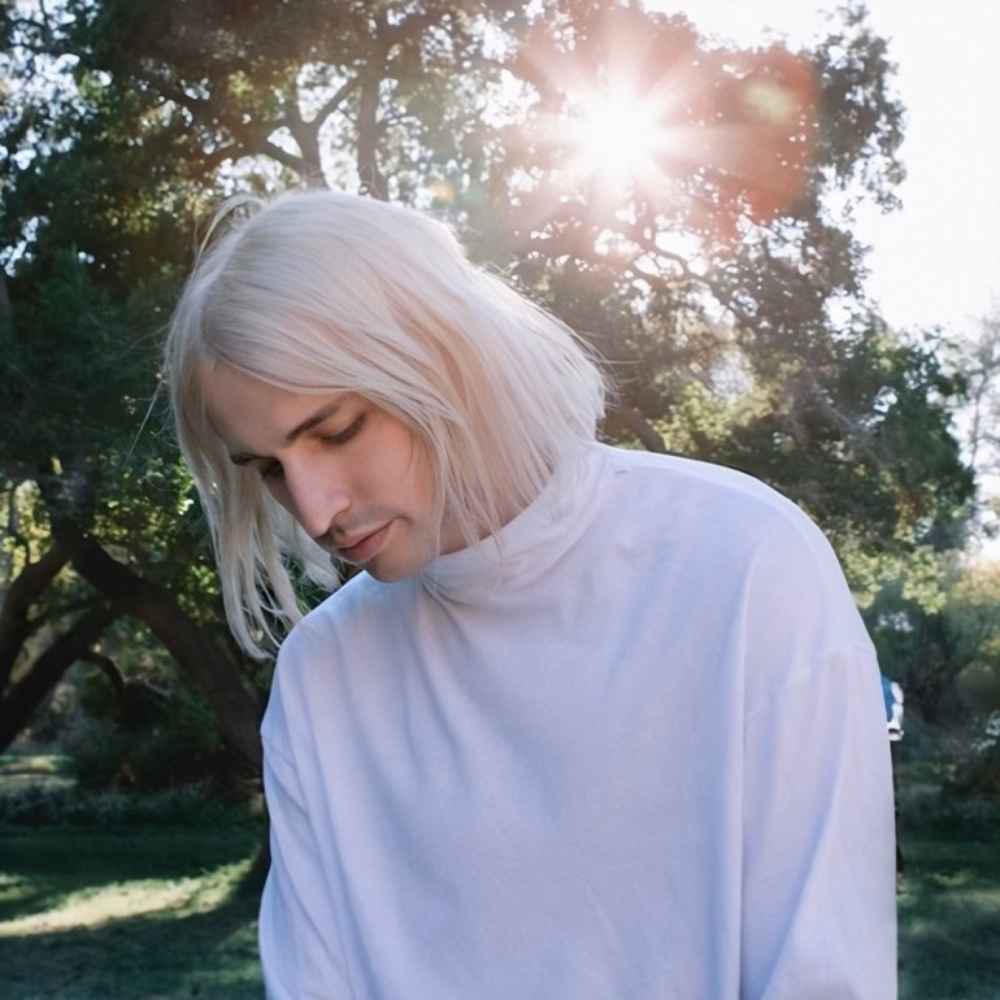
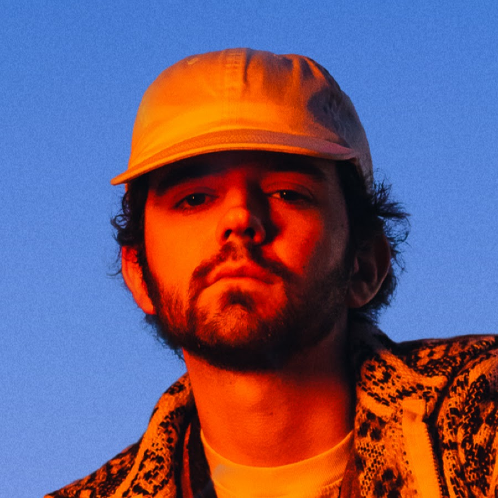
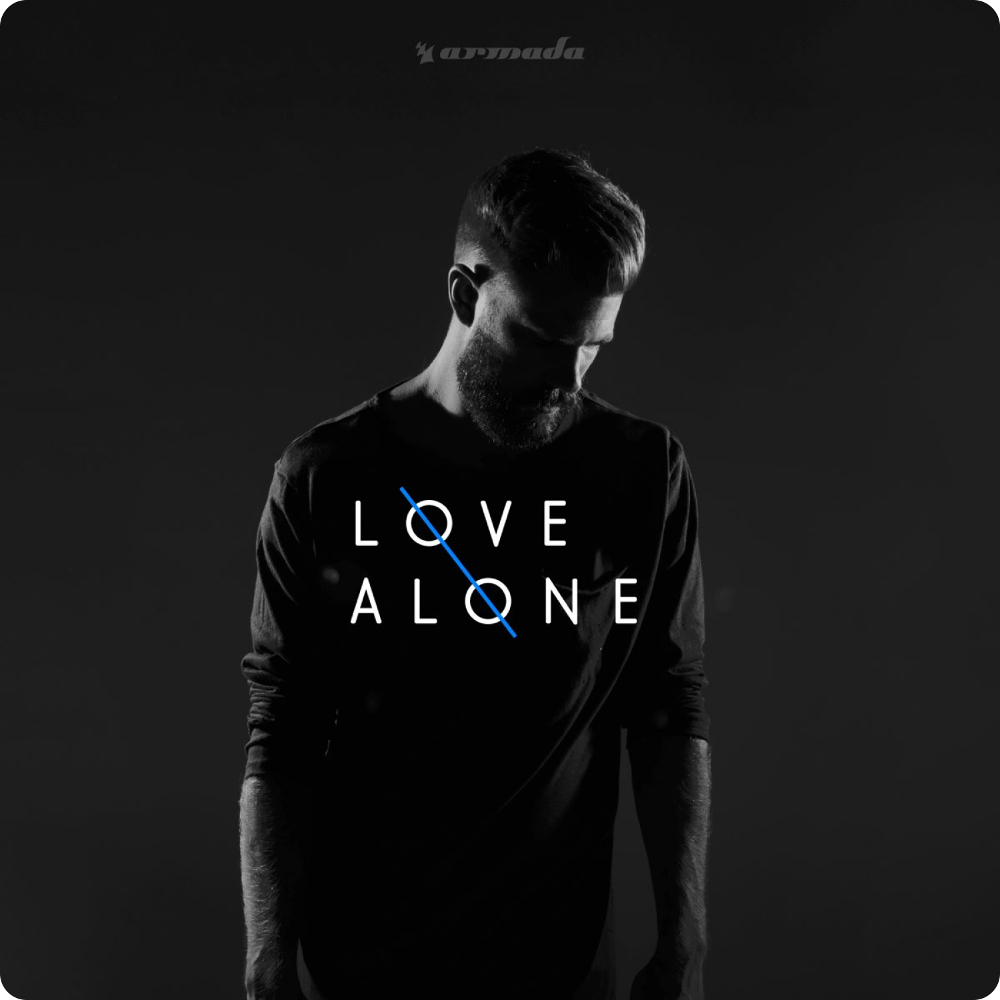

Bubble milk tea lover, gamer, and Anime enthusiast who enjoys vibing with people.
MY UX CAREER GOALS
I think that no matter what design path I take, user-centered design will always align to my goals: help businesses leverage the experiences of users
to shape the success of digital products.
Ever since I entered the UX industry, I followed the direction of web and mobile product design until I was captivated by Extended Reality (XR). Since I
enjoy gaming and anything related to the fantasy genre, I felt a connection in AR/VR/MR as it introduces the next-level of creativity that would allow people to visit
and experience other "worlds."
While I've tried out VR headsets and Pokemon Go in the past, I never truly saw the beauty of immersive experiences until
I recently bought myself an Oculus Rift S and actually sat down to fully experience a portion of XR. Honestly, I wish I
realized it sooner. Now, I'm looking for the next opportunity as a Product Designer to design immersive XR experiences
that could revolutionize healthcare, educational training, daily life and help create the first Full-Dive video game!
DIVING INTO XR
After I bought an Oculus Rift S, my daily activities have shifted. I find
myself in what I call my "VR office," where I design no-code prototypes in VR tools such as Microsoft Maquette and Sketchbox 3D.
Since I'm actively learning more about XR, I've been attending webinars hosted by Unity and other XR groups that I find on Meetup.
Also, I'm currently expanding my XR knowledge and expertise in Unity and C#. As a side project, I'm learning how to develop a functional prototype VR game!

VIBING IN VRCHAT
I wish I got into VRchat sooner. VRchat is a social game where users can meet other people around the world in virtual reality. I find this a great
way to socialize with other people while we are under this pandemic. So far, my experience has been great and I've met some cool people.

FORMER COMPETITIVE GAMER WHO TURNED TO THE GACHA LIFE
I used to game hours upon hours, but after some time passed and I spent more of my time designing and setting my paths straight, I gradually played less and less.
When I began playing gacha games in 2017, I found it to be a stress reliever; where I can sit down and grind daily missions for 30 minutes to an
hour and then move onto something else.
Currently, my top 3 favorite gachas are Genshin Impact, Azur Lane and Arknights.
-
Genshin Impact
Developers/Publishers: miHoYo (2020)
-
Azur Lane
Developers/Publishers: YoStar, Manjuu, Yongshi (2017)
-
Arknights
Developers/Publishers: Hypergryph/Studio Montagne, YoStar (2019)
THERE IS NO DOUBT I'M A WEEB
I've been actively watching Anime ever since I was a kid and it still amazes me how I still keep this hobby today.
I've had my share of watching many Anime throughout the years, but the ones that I enjoy the most are
emotional stories that hit you in your "feels."
I have a list of countless Anime that I consider my "favorites," but if I had to choose, my top 5 would be:
Angel Beats, Clannad, the Sword Art Online series, Your Name and Weathering With You.
-

Angel Beats
Author: Jun Maeda (TV - 2010)
-
Clannad
Author: Jun Maeda (TV Series - 2007)
-

Sword Art Online: Alicization
Author: Reki Kawahara (TV Series - 2019)
-
Weathering With You
Director: Makoto Shinkai (Film - 2019)
-
Your Name
Director: Makoto Shinkai (Film - 2016)
MY FAVORITE MUSIC GENRES ARE EDM AND INDIE
Finally, I would like to share my music interests. I'm rather open to almost any type of music, but EDM and Indie hits home for me.
My top 3 favorite artists are Porter Robinson, Madeon and Mokita. I definitely recommend checking these amazing artists out!
-

Porter Robinson
Album: Worlds (2014)
-

Madeon
Album: Good Faith (2019)
-

Mokita
Single: Love Alone (2018)
TESTIMONIALS
"Ryan designed my portfolio website, and I could not have been happier with how everything turned out.
Out of 200+ designers reached out to me on the project, Ryan and his work immediately stood out. I had no idea
that he was still so early in his career, as his work and his professionalism are far beyond his age.
Ryan was prompt, creative, and very flexible with all of my ideas--even the incoherent ones I couldn't communicate well.
As a backend developer, I was unsure of how to show off my enterprise coding projects; Ryan had the great idea to
write up case studies about each one as a substitute for revealing proprietary source code.
I would recommend Ryan to anyone in need of UI/UX design work. He would make a fantastic addition to any team, and I look
forward to seeing his career unfold (and reaching out to him when I want to redesign my site!)."
Derek Foster, Senior Software Consultant at Red Hat.
INTERESTED IN CHATTING OR COLLABORATING?
Send me an email. Don't worry, I promise I don't bite. 😉